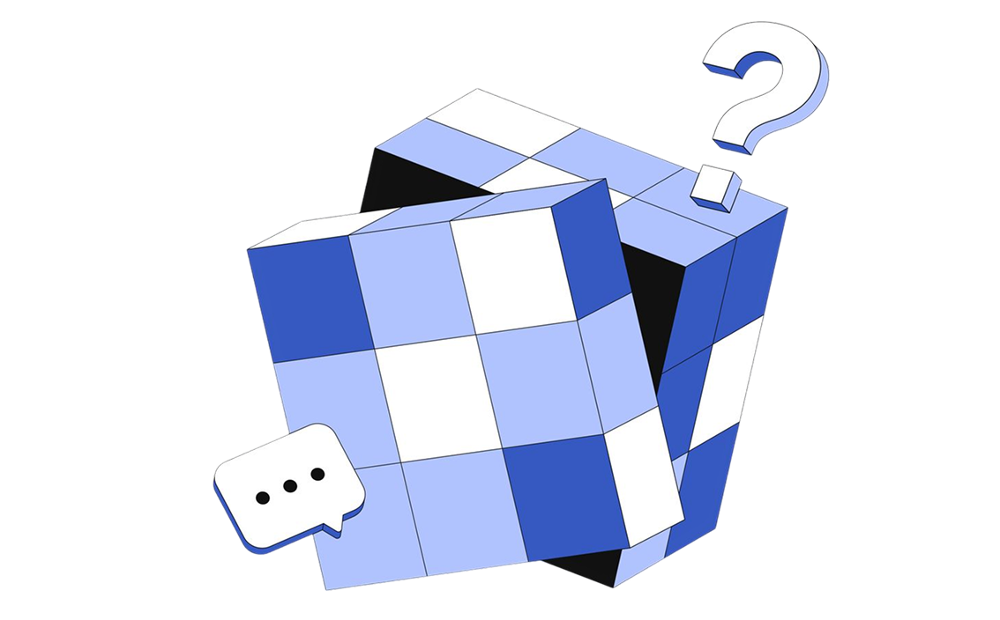

Perguntas frequentes sobre o SoulMove
Tire suas dúvidas sobre pontuação, ranking, atividades registradas e funcionamento do projeto.

O que é o SoulMove?
O SoulMove é um programa de pontos sustentáveis da SoulUp. Ele transforma ações como reciclagem, transporte público, caminhada, bike e economia de energia em pontos, ranking e recompensas reais.
Quais ações sustentáveis geram pontos?
Usar transporte público, andar de bike (mín. 3km), caminhar (mín. 2km), reciclar corretamente e reduzir o consumo de energia. Cada categoria tem uma pontuação base definida pelo impacto ambiental e pela facilidade de comprovação.
Como as ações são pontuadas?
Cada ação tem uma pontuação base: transporte público vale 30 pts, reciclagem 20 pts, bike 35 pts, caminhada 25 pts e economia de energia 40 pts. Missões semanais podem dobrar esses valores.
O que são missões semanais?
São desafios temporários que incentivam a repetição de ações específicas — como reciclar durante 5 dias seguidos ou usar transporte público mais de uma vez na semana. Quem completa ganha pontos em dobro.
Posso repetir a mesma ação?
Sim. O SoulMove incentiva a recorrência de bons hábitos, mas aplica limites por categoria para manter a pontuação justa e evitar abusos.
Como funciona a comprovação?
Depende da ação. Transporte público: foto ou print do bilhete, cartão ou app de transporte. Reciclagem: foto no ponto de coleta ou do material separado. Bike e caminhada: GPS automático, print de app de rota ou foto no destino. Economia de energia: comparação do consumo em kWh entre meses na conta de luz.
Quais são as distâncias mínimas aceitas?
Trajetos de bike pontuam a partir de 3 km. Trajetos a pé pontuam a partir de 2 km. Abaixo dessas distâncias, a ação não é contabilizada.
Como funciona o ranking?
O ranking organiza os usuários pela pontuação acumulada no mês. Você compete tanto no ranking geral quanto dentro do seu grupo de amigos. Ao final de cada mês o ranking é renovado, dando a todos uma nova chance.
Quais recompensas posso ganhar?
Os pontos geram benefícios dentro do programa: destaque no ranking, participação em missões exclusivas e possibilidade de subsídio na conta de energia. O Top 1 pode ter a conta subsidiada total ou parcialmente.
Como começo a usar o SoulMove?
Crie uma conta na plataforma SoulUp, escolha uma ação sustentável, envie a comprovação e acompanhe sua pontuação no ranking. Simples assim.
Fale com a equipe do projeto
Envie uma mensagem para entender melhor a proposta, o MVP e as funcionalidades pensadas para a SoulMove.